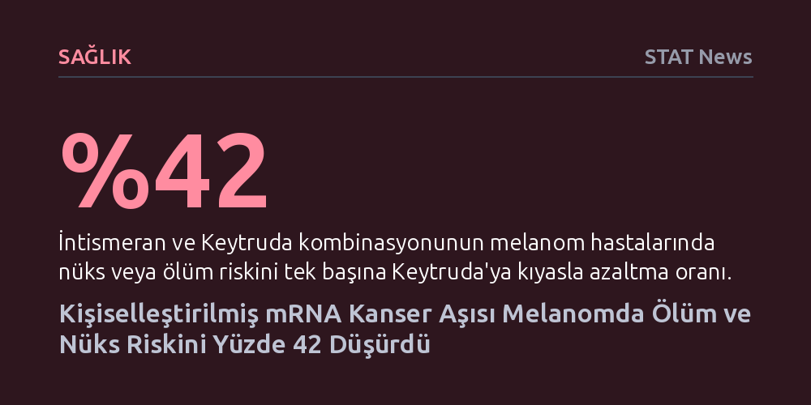

SAGLIK · STAT News · 2026-10-26
Merck ve Moderna’nın geliştirdiği kişiselleştirilmiş mRNA aşısı intismeran, Keytruda ile birlikte kullanıldığında melanom hastalarında nüks veya ölüm riskini yüzde 42 azalttı. Yüzyıllık başarısızlık zincirini kıran bu bulgu, mRNA aşılarının diğer kanser türlerine uyarlanmasının önünü açıyor.
Kanser aşılarının yüzyıllık başarısızlık geçmişini geride bırakan bu sonuç, kişiselleştirilmiş mRNA teknolojisinin sadece salgınlarda değil, kanser tedavisinde de somut bir klinik başarı sağladığını kanıtlıyor.

Madrid'de düzenlenen Avrupa Tıbbi Onkoloji Derneği (ESMO) kongresinde sunulan faz 3 çalışma verileri, onkoloji dünyasında uzun süredir beklenen kritik bir dönüm noktasını işaret ediyor. Merck ve Moderna ortaklığıyla geliştirilen kişiselleştirilmiş mRNA kanser aşısı intismeran, ileri evre melanom hastalarında standart immünoterapiye kıyasla çarpıcı bir klinik üstünlük sergiledi.
Çalışmanın sonuçlarına göre, intismeran aşısının Merck’in kontrol noktası inhibitörü Keytruda ile kombine edilmesi, tek başına Keytruda kullanımına kıyasla hastalığın nüksetmesi veya ölüm riskini yüzde 42 oranında düşürdü. Bu bulgu, cerrahi operasyon sonrası nüks riski yüksek olan melanom hastaları için mevcut standartların çok ötesinde bir koruma vadediyor.
İntismeran, klasik aşı mantığından farklı olarak her hastanın kendi tümör dokusundaki genetik mutasyonlara göre özel olarak üretiliyor. Hastanın tümöründen alınan biyopsi verileri dizilenerek bağışıklık sisteminin hedefleyebileceği özgün neoantijenler tespit ediliyor ve kişiye özel mRNA dizilimi laboratuvarda hazırlanıyor. Böylece bağışıklık sistemi doğrudan hastanın kendi kanser hücrelerini tanıyacak şekilde eğitiliyor.
Tedavinin asıl gücü ise Keytruda ile oluşturduğu sinerjiden kaynaklanıyor. Keytruda tümör hücrelerinin bağışıklık sistemine uyguladığı moleküler frenleri devre dışı bırakırken, kişiselleştirilmiş mRNA aşısı T hücrelerine tam olarak hangi hedefi vurmaları gerektiğini gösteriyor. Bu çifte mekanizma sayesinde tümörün bağışıklık yanıtından kaçma kabiliyeti iki koldan birden kırılmış oluyor.
Bu gelişmeyi tıp dünyası açısından bu denli sarsıcı kılan unsur, kanser aşıları alanında bir asırdır biriken düş kırıklığı. Memorial Sloan Kettering Kanser Merkezi'nden Vinod Balachandran'ın kongredeki bir sunumunda vurguladığı gibi, kanser aşısı geliştirme çabaları şimdiye dek aslında 100 yıllık bir başarısızlık geçmişinden ibaretti.
Daha önceki girişimlerin neredeyse tamamı bağışıklık sistemini tümöre karşı yeterli güçte ve hassasiyette uyaramadığı için klinik aşamalarda sonuçsuz kalmıştı. Pandemi sürecinde olgunlaşan mRNA platformunun kişiselleştirilmiş genomik analizlerle birleştirilmesi, bu kronik tıkanıklığı ilk kez üçüncü faz aşamasında kesin bir başarıyla aşmayı sağladı.
Madrid’deki oturumlarda tartışmalar şimdiden bu yeni tedavinin klinik uygulamaya nasıl entegre edileceği ve kapsamının ne kadar genişletilebileceği üzerine odaklandı. Londra'daki Royal Marsden Hastanesi'nden James Larkin, kongrede yaptığı değerlendirmede yaklaşımın ufkunu "Prensipte bu tür bir yaklaşım diğer tümör türlerine de uygulanabilir" sözleriyle özetledi.
Onkologların önündeki yeni hedef, mutasyon yükü melanom kadar yüksek olmayan akciğer, pankreas ya da kalın bağırsak gibi diğer tümör türlerinde de benzer bir bağışıklık yanıtı alabilmek. Bununla birlikte, her hasta için sıfırdan aşı tasarlanmasının getirdiği üretim süreleri, yüksek lojistik maliyetler ve ilacın rutin klinik işleyişe entegrasyonu, başarının tüm sağlık sistemine yayılmasında aşılması gereken kritik engeller olarak duruyor.